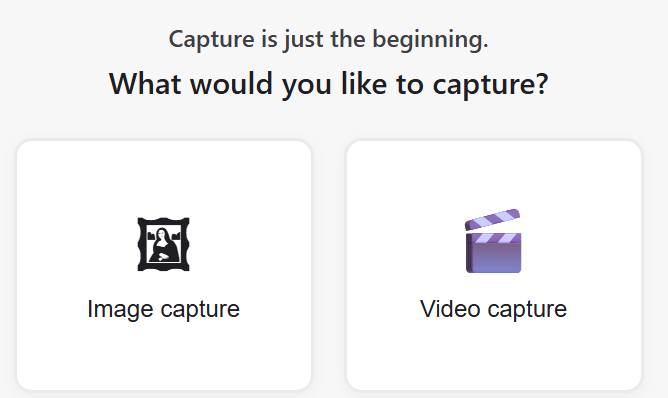
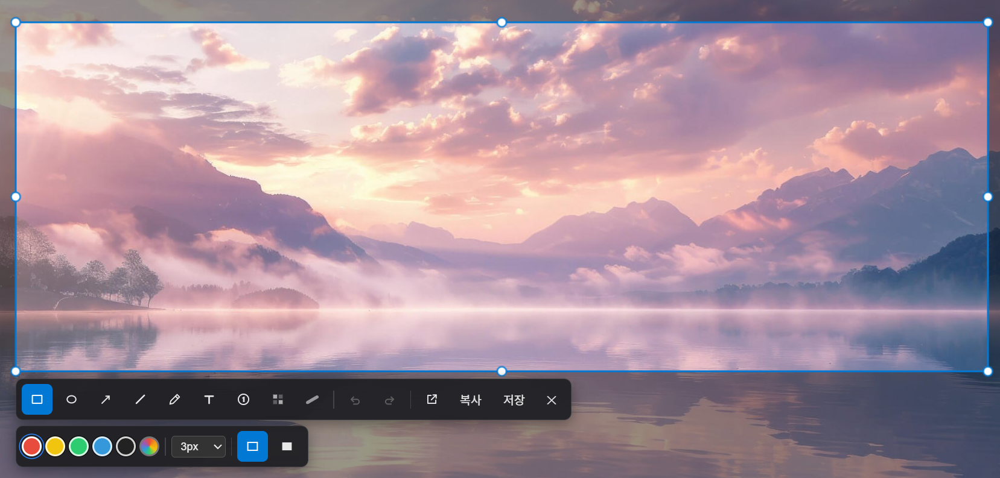
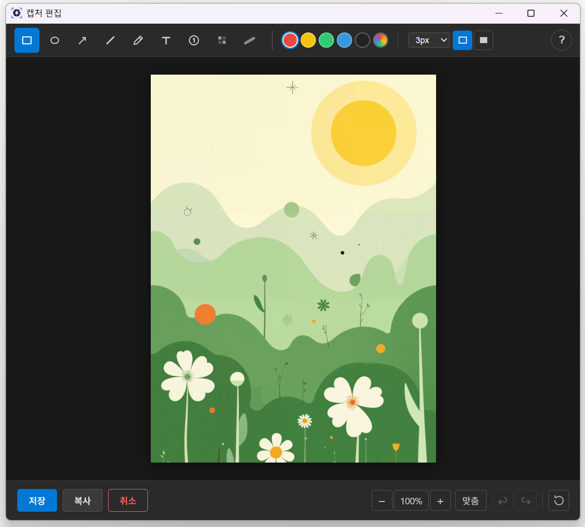

Capture, annotate, and record your screen.
Save and share instantly as images, GIFs, or video. A fast, lightweight screen capture tool for Windows.
See it in action
From choosing to capturing to editing — real screens.



Everything you need, built in
From capture to annotation to recording — all in one app.
Quick capture
Capture a region, the full screen, or a specific window with a single shortcut. Multi-monitor supported.
Ctrl + Alt + CPowerful annotation
Rectangles, arrows, text, numbers, highlighter, and blur. Edit right after you capture.
GIF & video recording
Record a region or the full screen to MP4 or GIF — with system audio included.
Ctrl + Alt + RLight & fast
A native app built on Rust + Tauri. Minimal system footprint, instant launch.
Korean & English
Automatically follows your OS language, or pick Korean / English manually in Settings.
Free
Download free from the Microsoft Store. No ads, no payments.
Get started now
Install directly on Windows 10/11.
Windows 10 (1809) or later · 64-bit
ClipShot is currently Windows 10/11 only. macOS support is under consideration.